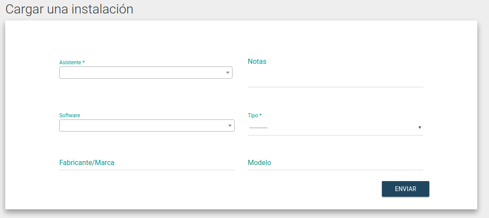

Registrar una Instalación
-
Para cargar una instalación, se debe haber registrado e iniciado sesión como Instalador (Ver Registro de Instaladores)
-
En el menú desplegable "Colaboradores", ir a la opción "Cargar una instalación":

-
Cargar el formulario con los datos de la instalación, donde serán obligatorios los ítems marcados con (*):
-
Asistente: El asistente al evento a quien se le instaló. Se puede buscar por nombre, apellido, nick o email. Software: El software que se le instaló. Si el mismo no figura en la lista, por favor avisanos para agregarlo.Notas: Campo de texto libre, donde se puede documentar cualquier cosa que el instalador crea relevante.Tipo: El tipo de dispositivo que fue instalado (PC, Notebook, Móvil, etc.).Marca: Marca/Fabricante del dispositivo.Modelo: Modelo del dispositivo instalado.
